AP macro Notes
PPC and basic stuff (Unit 1)
Scarcity: Unlimited Wants but limited resources
Oppurtunity Cost: Most desirable alternative given up when you make a choice
Factors of production: Land, labor, capital (Machines and tools), entrepreneurship (Take the previous 3 and produce results)
Production possibilities curve (PPC): Shows the different maximum combinations of producing two different goods using all of your fixed resources
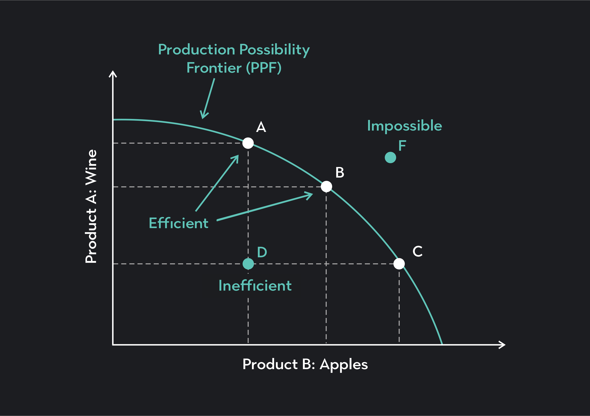
Constant oppurunity cost is linear slope, increasing oppurtunity cost is concave down
Shifts in or out with the quality/quantity of resources!
Absolute Advantage: The producer that can produce the most output or requires the least amount of resources
Comparative Advtange: The producer with the lowest oppurtunity cost
The opportunity cost of \(\text{A is }\frac{\text{cost for a unit of A}}{\text{cost for a unit of B}}\)
For output (like PPCs), the opporunity cost of \(\text{A is }\frac{\text{B}}{\text{A}}\)
Countries should specialize in the product where they can a lower oppurunity cost
Mutually benefical terms of trade: The agreed upon conditions that would benefit both countries
The terms of trade for a good will fall between the two opportunity costs!
If they trade within this range it benefits both parties
Demand Supply graphs (Unit 1)
Demand and supply:
Demand: There is an inverse relationship between price and quantity demanded
Price changes quantity demanded, not demand!
Demand shifters:
1. Tastes and preferences
2. Market Size
3. Prices of related goods (substitutes and compliments)
4. Changes in income (Normal goods: More income=buy more product, Inferior goods: More income=buy less product)
5. Expectations for the future
Supply: There is a direct relationship between price and quantity supplied
Supply shifters:
1. Input prices (prices of resources)
2. Government tools (taxes, subsidies, regulations)
3. Number of sellers
4. Technology
5. Producer Expectations
Equilibrium:
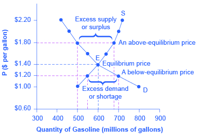
Single Shifts: Either demand goes up/down or supply goes up/down
Economic Indicators (Unit 2)
Circular flow model:
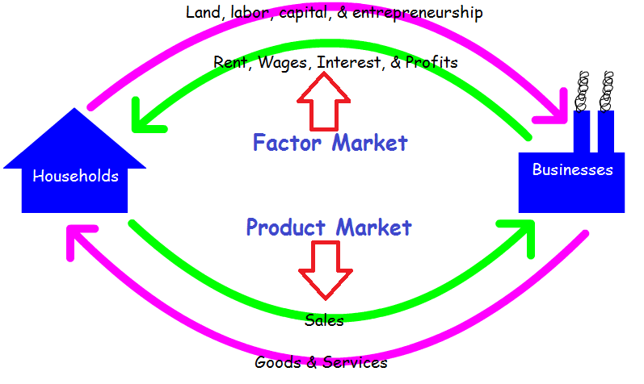
But the U.S. isn't a free market economy:
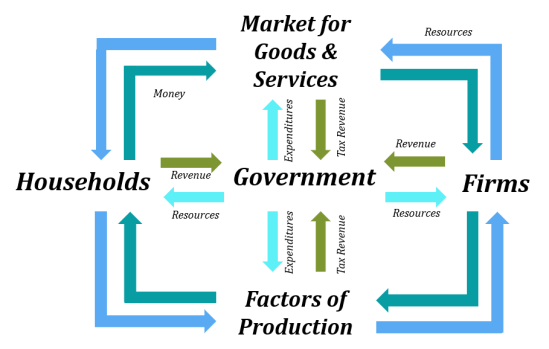
Private Sector: Part of the economy that is run by individuals and businesses
Public Sector: Part of the economy that is controlled by the government
Factor Payments: Payments for the factors of production (rent, wages, interest, profit)
Transfer Payments: The government redistributing income (social security, welfare, etc.)
Subsidies: Government payments to businesses so they can produce more
GDP (Unit 2)
GDP: The dollar value of all goods and services produced within a country's borders in one year
GDP per capita is just GDP per person in that country
Percent change in gdp: \(\frac{Y2-Y1}{Y1}\cdot{100}\)
What is not counted in GDP?
1. Intermediate goods (goods used to make final goods)
2. Non-production transactions (stocks, bonds, real estate, old cars, used clothes)
3. Non-market and illegal activities (Unpaid work, black markets, etc.)
GDP = Consumer Spending + Government Spending + Investment Spending (Business spending of physical capital or change in inventories) + NET Exports
GDP = \(C+I+G+(X-M)\) OR
GDP = Rent + Wages + Interest + Profit (This comes from adding the income made from all final goods and services produced in a year)
Nominal vs. Real GDP: Real GDP adjusts for inflation (so its the best measure)
Unemployment (Unit 2)
Unemployed person: A person actively looking for a job but aren't working
Unemployment rate: The percent of people in the labor force who want a job but are not working
Labor force: The number of people aged 16+ that are willing/able to work (not in school/jail)
Labor force participation rate: The percent of population in the labor force
The 3 types of unemployment
1. Frictional: Between jobs, qualified workers with transferable skills (includes seasonal)
2. Structural: Changes to the labor force and tech make some jobs useless or skills obsolete. Workers must learn new skills
3. Cyclical: Unemployment caused from a recession (AD goes down so less labor force is needed) (Caused by the business cycle)
Natural Rate of Unemployment: Frictional + Structural (Around 5% in the US)
Full Employment (Y): The rGDP when there is no cylical unemployment
Possible reasons for misdiagnosis of unemployment rate:
1. Discouraged workers (given up looking for a job so NOT in the laber force)
2. Part time workers
Inflation (Unit 2)
Inflation: When money loses its purchasing power (or a general increase in prices throughout the economy)
Unexpected inflation helps borrowers, but hurts lenders and people on fixed income
Nominal Wages: Wages based on dollars
Real Wages: Wages based on purchasing power (adjusted for inflation)
Real interest rates: The percentage increase in purchasing power that a borrower pays. (Adjusted for inflation)
Real = nominal interest rate - expected inflation
The Consumer Price Index (CPI)
\(\text{CPI}=\frac{\text{Price of Market Basket}}{\text{Price of Market Basket in Base Year}}\cdot100\)
The base year is given an index of 100 (obviously)
How do we use this?
\(\text{Inflation Rate}=\frac{\text{New CPI}-\text{Old CPI}}{\text{Old CPI}}\cdot100\)
GDP Deflator
\(\text{GDP Deflator} = \frac{\text{Nominal GDP}}{\text{Real GDP}}\cdot100\)
The GDP Deflator measures the prices of all goods produced. The CPI only measures prices of goods and services bought by consumers.
Consider the following chart:

\(\text{2010 Nominal GDP}=100\cdot50+2000\cdot4=13000\)
\(\text{2020 Nominal GDP}=75\cdot75+3000\cdot5=20625\)
\(\text{2020 rGDP (using 2010 as a base year)}=75\cdot50+3000\cdot4=15750\)
Now we can use this to calculate the GPA Deflator:
\(\text{GDP Deflator}=\frac{20625}{15750}\cdot100=130.92\)
How do we use this?
1. Converting Nominal to Real GDP: \(\text{Real GDP} = \frac{\text{Nominal GDP}}{\text{GDP Deflator}}\cdot100\)
The 3 causes of inflation:
1. The government prints too much money
\(MV=PY=\text{Nominal GDP}\) (Quantity theory of money)
V, the velocity of money (the average amount of times a dollar is spent and respent in a year)
P, the price level
Y, the real GDP
M, the Money Supply
2. Demand Pull inflation:
Demand pulls up prices (An overheated economy with excessive spending and few goods)
3. Cost Push Inflation:
Higher Production costs increase prices
The business cycle (unit 2)
3 goals for each economy: Promote economic growth, limit unemployment, keep prices stable
1. Economic growth (Measured by rGDP)
2. Full unemployment (The Natural Rate of unemployment (Frictional + Structural))
3. Stable prices (Measured by GDP Deflator or CPI)
These are hard to achieve because of the business cycle:
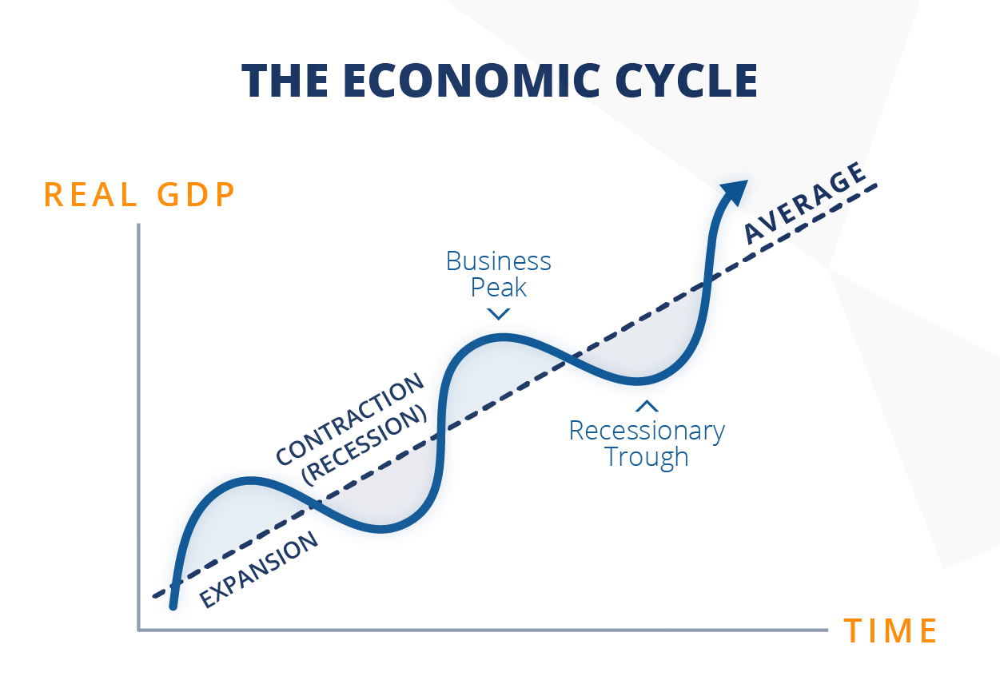
A positive slope on the potential output shows economic growth
Expansions: When the economy is on the increase
Contractions: When the economy is on the decrease
Peak (high point): Unemployment is low, inflation is usually high
Trough (low point): Unemployment is high, inflation is usually low
Inflationary Gap: rGDP is above potential output
Recessionary Gap: rGDP is below potential output
A recession is a 6 month period of decline in rGDP.
Multipliers (Unit 3)
Consumers have disposible income (Personal income - taxes) (Can spend or save)
Marginal Propensity to Consume (MPC): The percentage of disposible income that is spent
Marginal Propensity to Save (MPS): The percentage of disposible income that is saved
How does this ripple through the economy? (Heres an example in which MPC=0.8 for each person)
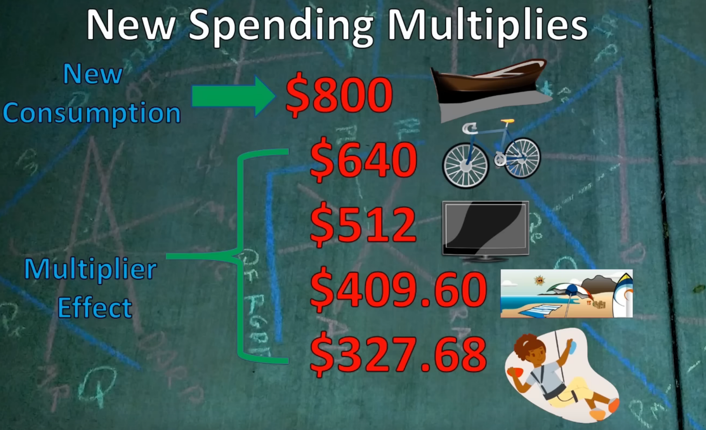
You buy a boat for 800$, boat shop owner buys a bike for $640, etc.
So how much can this impact GDP?
Spending Multiplier = \(\frac{1}{\text{MPS}}=\frac{1}{1-\text{MPC}}\)
So for the bike example, \(\text{Spending Multiplier}=\frac{1}{0.2}=5\) so $800 in spending could lead to $4000 dollar increase in GDP
The Tax Multiplier: When the government increases/decreases taxes, it changes the amount of disposible income.
Tax Multiplier \(=-\frac{\text{MPC}}{MPS}=-\frac{\text{MPC}}{1-MPC}\)
For the bike example, the tax multiplier is \(-\frac{0.8}{0.2}=-4\)
So if the government lowered taxes by 20 million dollars, there would be a maximum GDP increase of 80 million dollars.
Aggregate Demand and Supply (Unit 3)
Aggregate Demand: All the goods and services (rGDP) people are willing to buy at different price levels
The Demand for everything by everyone in the USA
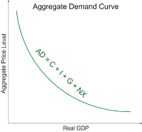
Why is AD downwards sloping?
1. The Wealth Effect: Higher price levels reduce the purchasing power of money. And so less expenditures happen.
2. Interest Rate Effect: When PL increases, lenders need to charge more interest to get a real return which discourages consumer spending + business investment
3. Foreign Trade Effect: When U.S. PL goes up, foreign powers buy less U.S. goods
What are the shifters?
1. Any change in \(C, I, G, \text{or } X_n\)
Aggregate Supply: Production of all firms in the economy
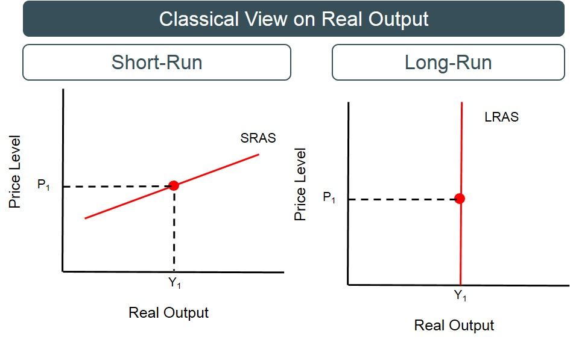
In the long run, the same exact quantity will be produced no matter the price level. (Full employment GDP)
Both the short and long run aggregate supply curves can shift!
SRAS Shifters:
1. Price of resources
2. Technology/Productivity
3. Government regulations/taxes/subsidies
5. Inflation Expectation
LRAS Shifters:
1. Quantity of Resources
2. Quality of Resources
3. Productivity
4. Technology
*Anything that shifts the PPC inwards shifts the LRAS to the left and vice versa!
Economy at full employment!
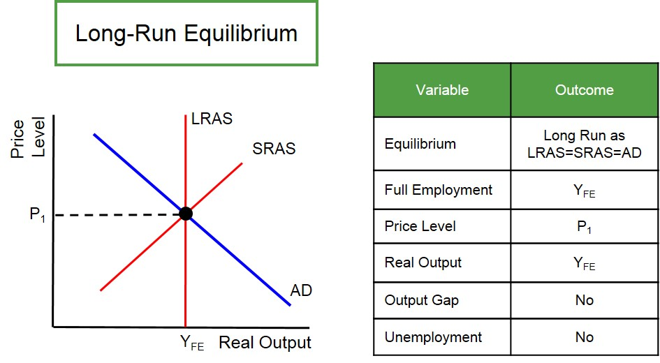
Recessionary Gap: Actual rGDP is less than potential rGDP (the equilibrium is to the left of LRAS)
Inflationary Gap: Actual rGDP is greater than potential rGDP (the equilibrium is to the right of LRAS)
Demand-Pull Inflation: Prices go up due to an increase in AD
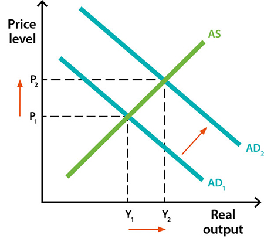
Stagflation (Cost-Push inflation): Negative SRAS Shock (This is a recessionary gap)
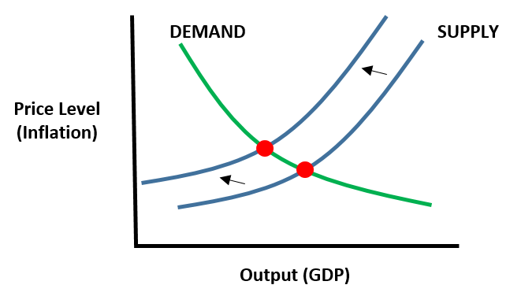
Long Run Adjustments (some examples)
1. Consumers want more stuff -> AD shifts right -> Inflationary Gap (in the short run)
In the long run, wages then go up -> cost of firms go up -> SRAS shifts left -> PL increases
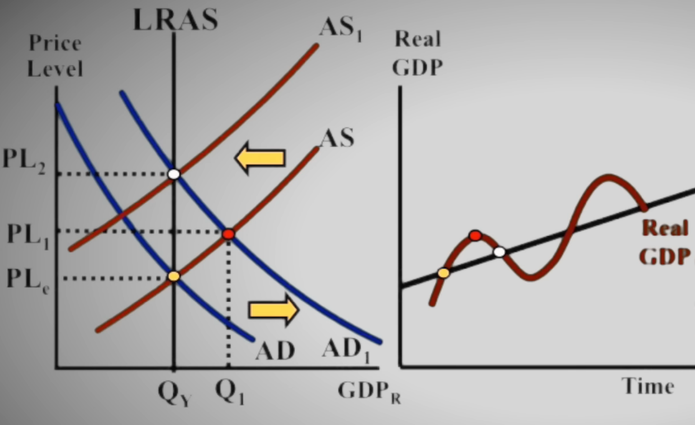
2. For a recessionary gap the opposite will happen and overall PL decreases
Long run adjustment is different than economic growth!
Economic growth: The idea of rGDP going up in the long run
This can be created by an increase in investment: (What happens?)
More capital -> AD shifts right, less production costs -> SRAS shifts right, PPC moves outwards -> LRAS shifts right
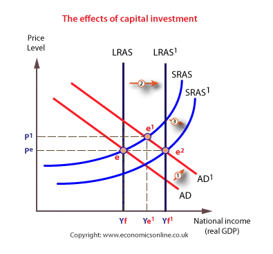
Discretionary Fiscal Policy and Automatic Stabalizers (Unit 3)
Sometimes it is faster to enact fiscal policy (government intervention) than to wait for the economy to self-correct.
Expansionary fiscal policy: fights unemployment by: increasing government spending and/or decreasing taxes
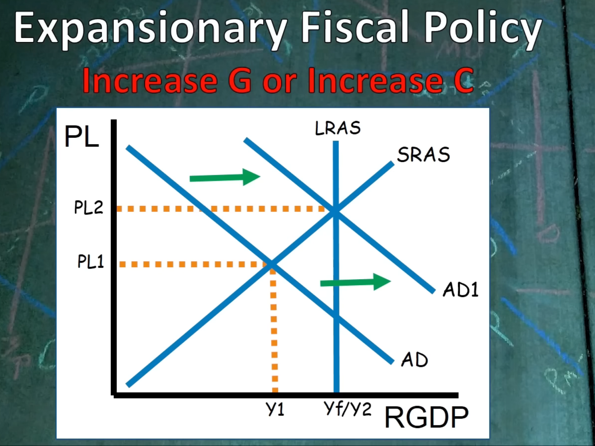
This will increase budget deficit or surplus but will restore to long run eq.
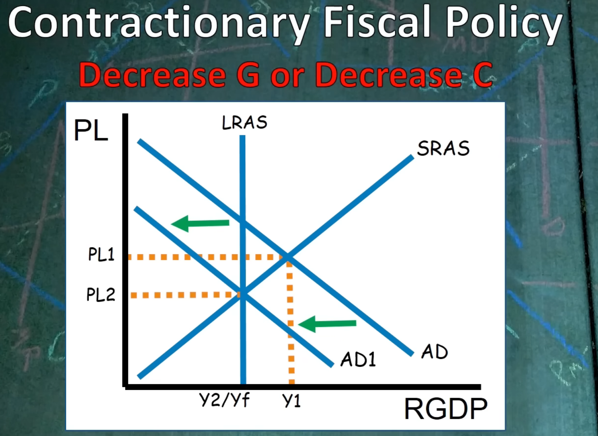
Contractionary fiscal policy: fights inflation by: decreasing government spending and/or increasing taxes
Automatic Stabilizers: Limit the flucuations of the business cycle
Budget Defecit: Decrease during expansions and increase during contractions
1. Taxes (Based off income): Increase during expansions and decrease during contractions
2. Transfer Payment (like unemployment compensation): Decrease during expansions (fewer people are unemployed) and increase during contractions
Financial Assets and Money (Unit 4)
Types of financial assets:
1. Stocks: Certificates for ownership of a corporation
2. Bonds: Certificate that gives the owner the right to be paid back for a loan to a business or the government
*Inverse relationship between the price of bonds and the interest rate
3. Money: Most liquid asset
Money is...
1. A medium of exchange (can be used to buy goods and services)
2. A unit of account/standard of value (It can be used to measure relative values)
3. Store of value: If I work really hard today, the value of my work will be stored and will keep their value
How do we measure the money supply?
1. \(M_0\) (Monetary Base): Bank Reserves (not money) and Currency (money)
2. \(M_1\) (Money that is usable as a medium of exchange): Currency, checkable depsits (CDs), and Savings Deposits
3. \(M_2\) (Money and Near Money): All of \(M_1\) plus small time deposits and money market
Real vs. Nominal Rates of Change (Unit 4)
The difference between the two is the inflation rate, which can be found with the Fischer Formula.
The Fischer Formula:
\(i\approx{r}+\pi\)
\(i\): The nominal interest rate
\(r\): The real interest rate
\(\pi\): The inflation rate
Sometimes the actual rate of inflation is different than the expected rate of inflation.
Borrowers are helped because they pay a lower real interest rate!
Lenders are hurt because they get paid a lower real interest rate!
How can you use the Fischer Formula to understand the difference between rates of change?

Banking and the Money Supply (Unit 4)
What are bank balance sheets?
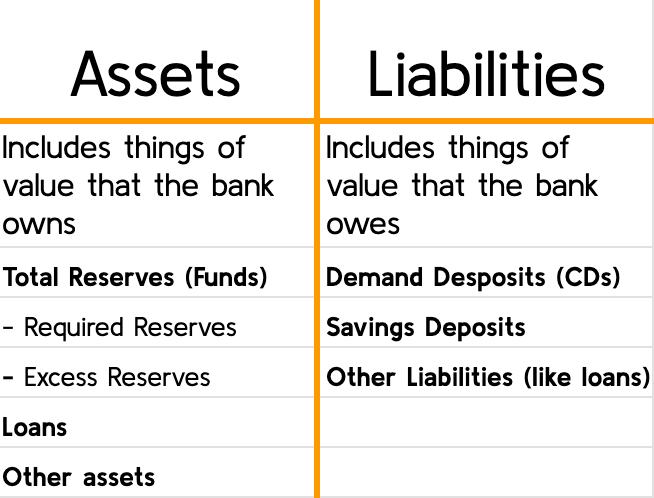
Required Reserves: Percentage of checkable (demand) deposits set by the federal reserve
Excess Reserves: Excess money the bank can loan out after required reserves
Assets = Liabilities
Now assume there is a 100$ checking account desposit with a 10% reserve requirement. 10% go towards required reserves, so the bank has 90$ it can loan out.
The Money Multiplier: How many dollars worth of new loans, deposits, and money can be created from excess reserves
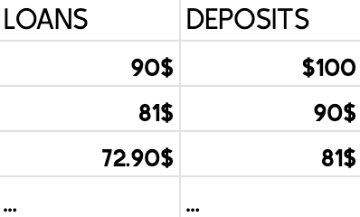
The total amount of money created is the sum of the "LOANS" column
This is found using a geometric series: \(\sum\text{LOANS}=\sum{L_1\cdot(1-\text{RR})^n}=L_1\cdot\frac{1}{\text{RR}}\)
The money multiplier uses a L-value (initial loan) of 1
So the money "created" out of 100$ with a 10% Reserve requirment is \(90$\cdot\frac{1}{0.1}=900$\)
The amount of new loans is \(90$\cdot10=900$\)
Total amount of deposits is \(90$\cdot10+100$=1000$\)
The Money Multiplier shows us the MAXIMUM amounts of loans that can be created from excess reserves
However, numbers are much lower because of leakages:
1. Many banks will hold excess requirements
2. Consumers will hold onto cash (rather than depositing money)
Money Market Graph:
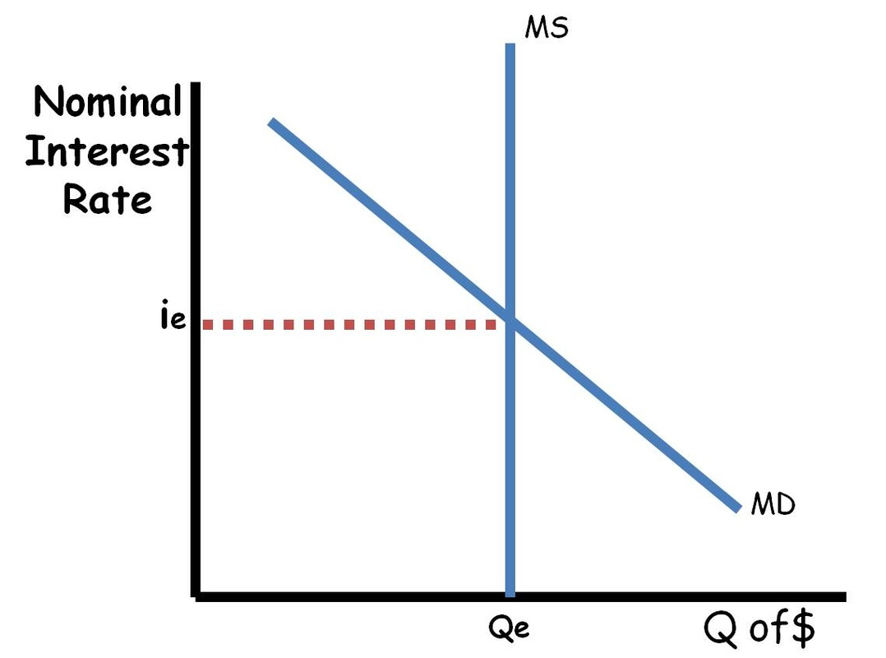
Money Demand:
*Nominal interest rate is the opportunity cost of holding money!
SO...as nominal interest rate increases people demand fewer dollars and when interest rates fall, the quantity of money increases!
Shifters of the Money Demand Curve:
1. Asset Demand for Money: Desire to hold wealth as money instead of other assets
2. Transaction Demand for Money: \(\text{GDP}=C+I+G+X_n\) and price level
Money Supply:
1. Determined by the actions of the central bank when resources are scarce
No relationship between the nominal interest rate and Quantity of Money
2. The central bank can shift by supplying more/less money
Monetary Policy (Unit 4)
Monetary Policy: How can banks target interest rates to move the economy around? (Fight inflation and unemployment)
1. Scarce Reserves:
Uses the money market to target interest rates
3 tools:
1. Open Market Operations: Buying and selling government bonds
2. Discount Rate: Interest Rate the central bank charges banks
3. Reserve Requirement: Percentage of checkable deposits
These are used to influence policy rate (interest rate that banks charge each other)
Actions of the central bank can multiply through the economy (Monetary policy impacted by money multiplier)
2. Ample Reserves:
Uses the reserves market graph to target interest rates (Used by the Federal Reserve)
The Reseves Market Graph:
The demand of reserves:
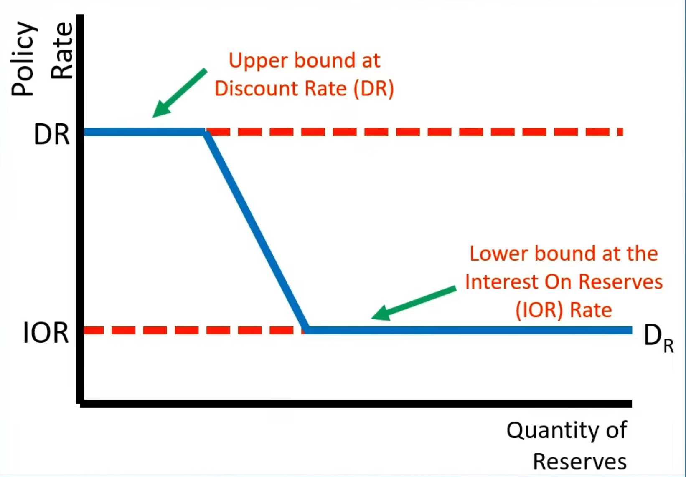
The lower bound portion moves up and down depending on the interest on reserves rate.
The supply of reserves: (This is determined by actions of the central bank)
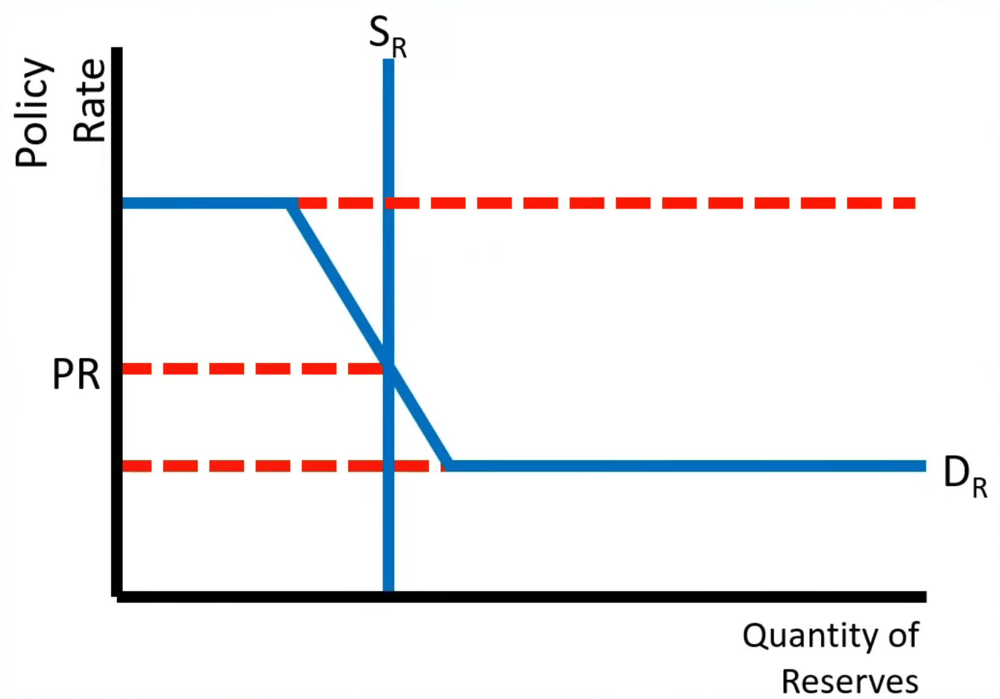
When the supply curve intersects the downward sloping portion of the demand curve, we have scarce reserves.
*If scarce, changes in reserves increase/decrease Policy Rate (PR)
When the supply curve intersects the flat portion at the bottom, we have ample reserves
*Must use different policy tools:
1. Open Market Operations (buying/selling bonds to increase/decrease supply of reserves)
Buying reserves shifts the supply of reserves to the right, which can be used to maintain an ample reserve
2. Changes in administered rates
Moves the demand curve: The upper flat portion changes with discount rate, the lower flat portion changes with Interest on Reserves
Consider the economy shown below in a recessionary gap. The government can use expansionary monetary policy to fight the unemployment.
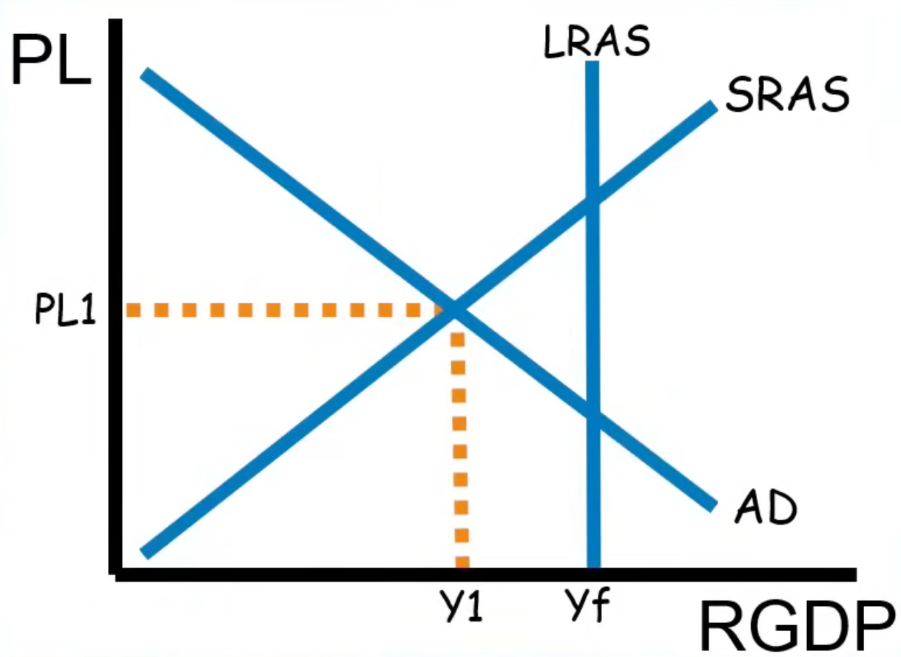
How can the government fix this?
The government wants to decrease interest rates in order to increase AD to get back to full employment (more consumer spending)
If they have scarce reserves...
They do this by increase the money supply by: buying bonds, lowering the discount rate, lowering the reserve requirement
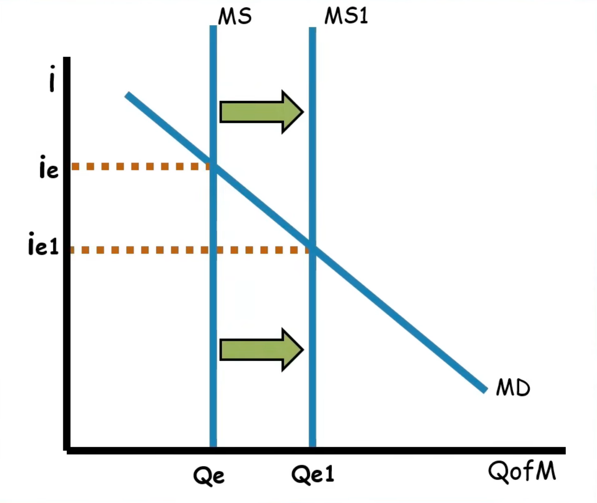
If they have ample reserves...
They can do this by decreasing the interest on reserves, (or interest on reserves AND the discount rate (Called decreasing administered rates))
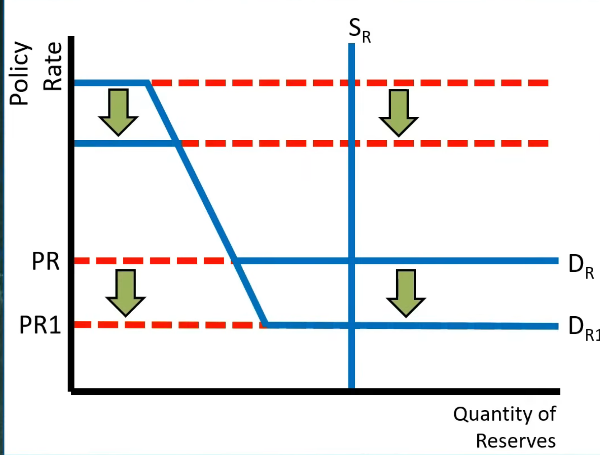
Governments do the opposite for contractionary monetary policy (fighting off inflation)
The Loanable Funds Graph (Unit 4)
This is the demand and supply for long-term loans/investments
y axis is real interest rate, x axis is Quantity of Loanable Funds
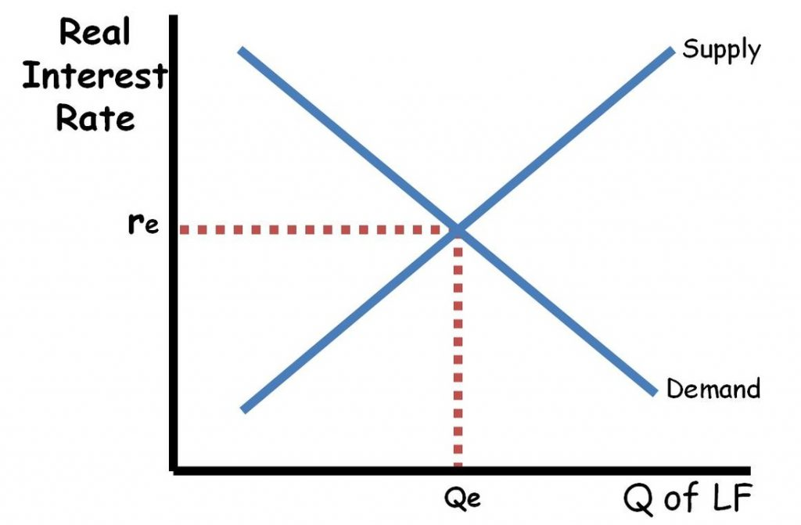
Demand Curve is the demand by businesses for gross investment
Shifters in demand: (Anything that impacts profit potential for investments)
1. Changes in economic outlook
2. Investment tax credits
Supply Curve (Savings supply): Money saved by households and avaliable for loans
Shifters in supply:
1. Changes in disposible income
2. Economic Outlook
3. Foreign Investment (When foreign investors put money in our market by saving in the U.S.)
Crowding Out: An increase in the government deficit will increase interest rates and reduce investment.
This can be graphed as either in increase in investment demand (government is demanding loans) or a decrease in supply (there are less loans avaliable to businesses)
Policy Consequences (Unit 5)
What are the long term consequences of monetary and fiscal policy actions?
Interactions between monetary and fiscal policy
Expansionary MP and Expansionary FP: Both increase AD
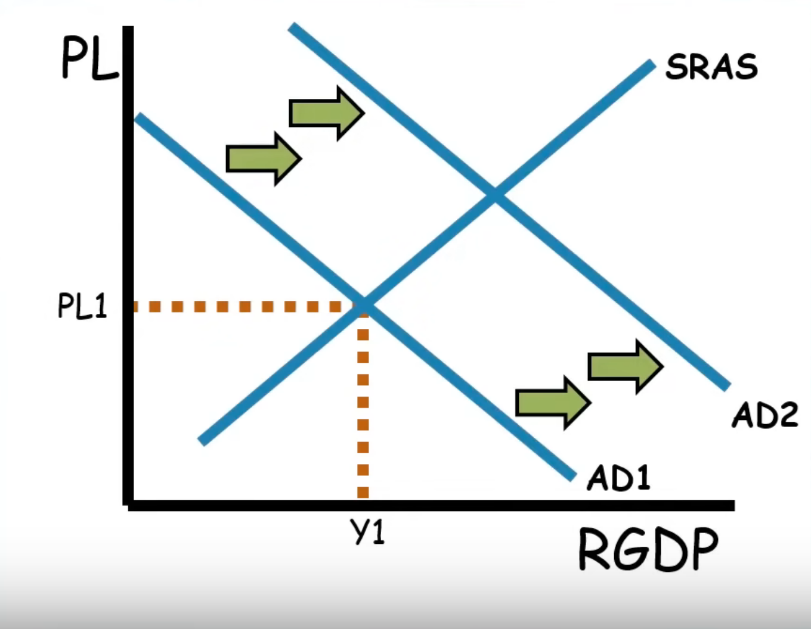
AD: Shifts right, PL: Increase, rGDP: Increase, unemployment: Decrease
What about interest rates?
Monetary Policy gives us a lower interest rate!
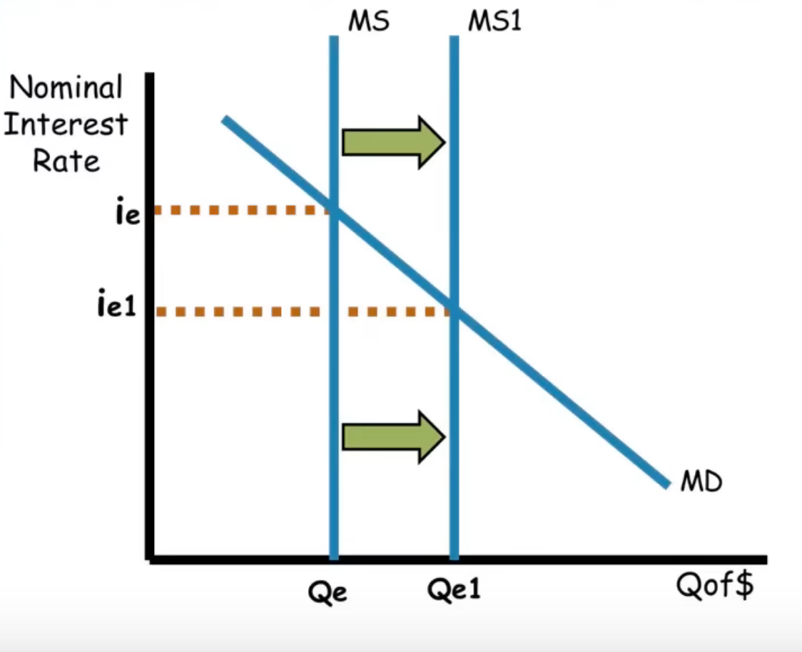
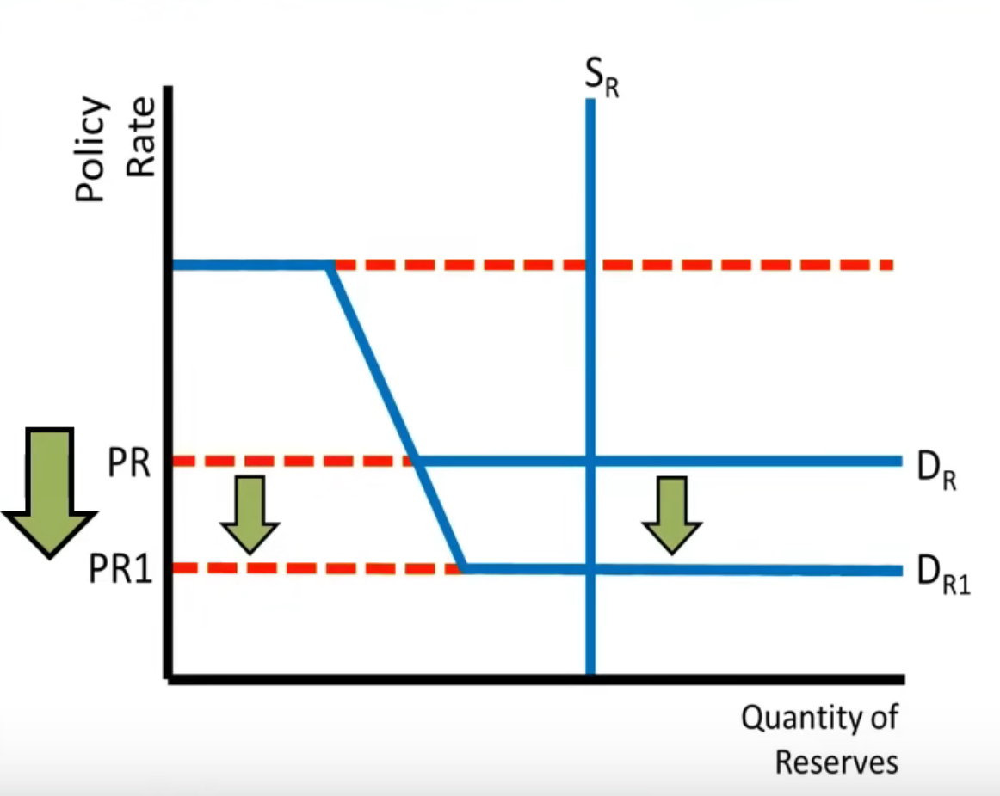
For scarce systems, an increase in the money supply -> lower nominal interest
For ample systems, a decrease on the interest on reserves rate decreases policy rate.
However, fiscal policy gives us a higher interest rate!
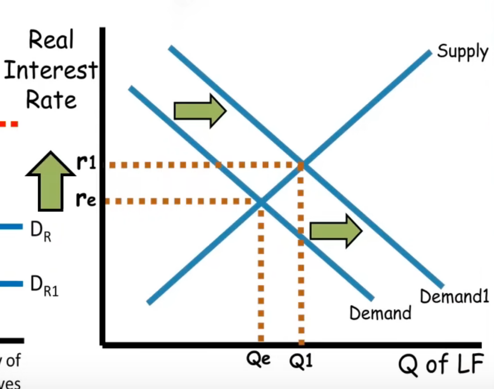
This is because taxes are lowered, which increases government debt so they want to take out loans!
Overall, Interest Rates are Indeterminant, Gross Investment is Indeterminant, Economic Growth is Indeterminant!
Contractionary MP and Expansionary FP:
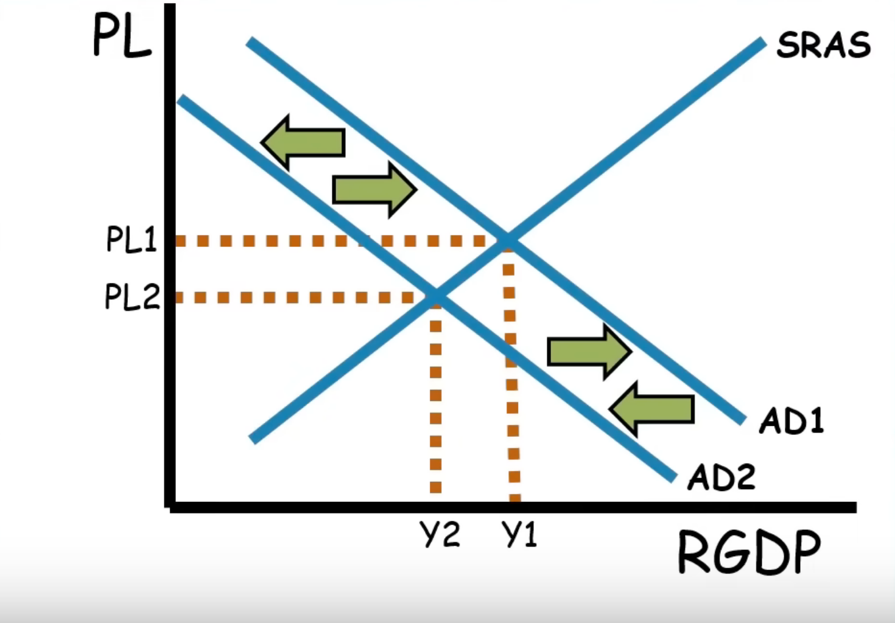
AD: Indeterminant, PL: Indeterminant, rGDP: Indeterminant, Unemployment: Indeterminant
What about interest rates?
Monetary policy gives us a higher interest rate!
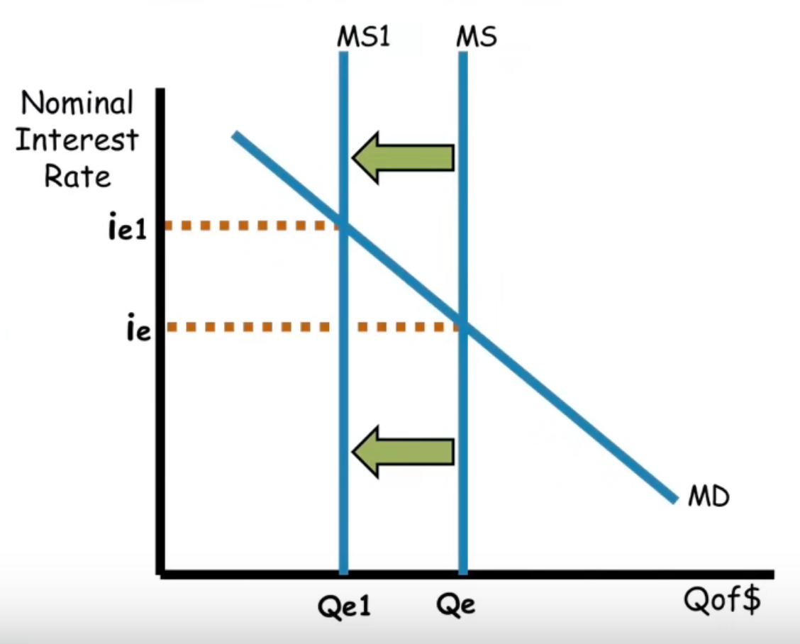
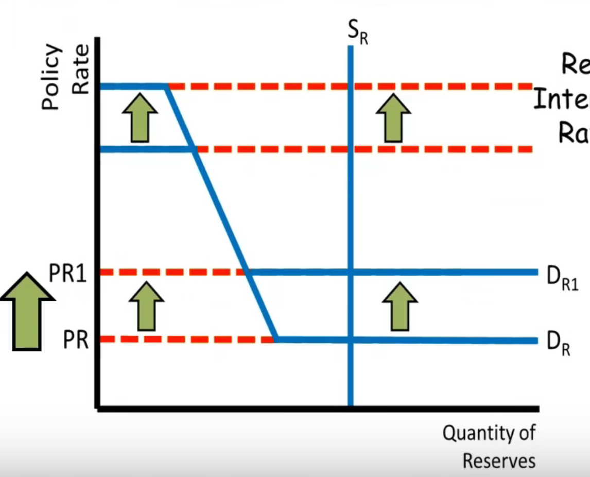
For scarce systems, a decrease in the money supply -> higher nominal interest
For ample systems, an increase on the interest on reserves rate increases policy rate.
Fiscal Policy also gives us a higher interest rate! (as shown earlier)
Overall, Interest Rates increase, Gross Investments decrease, and Economic Growth decreases.
Back to Home